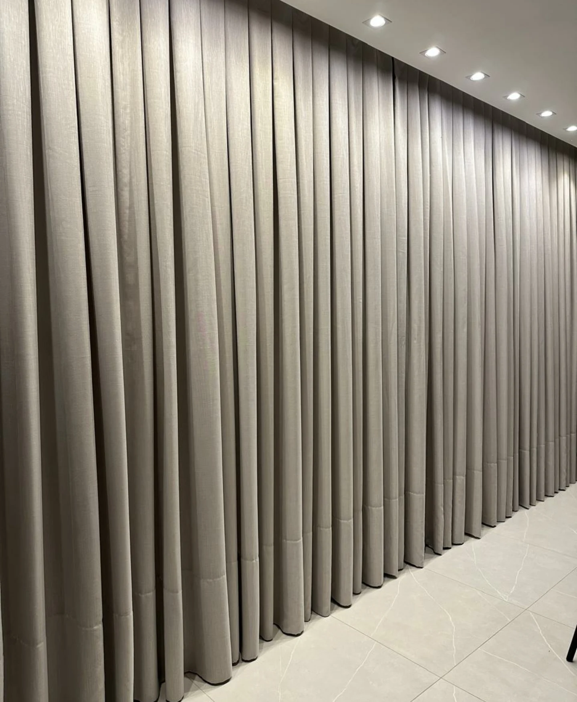
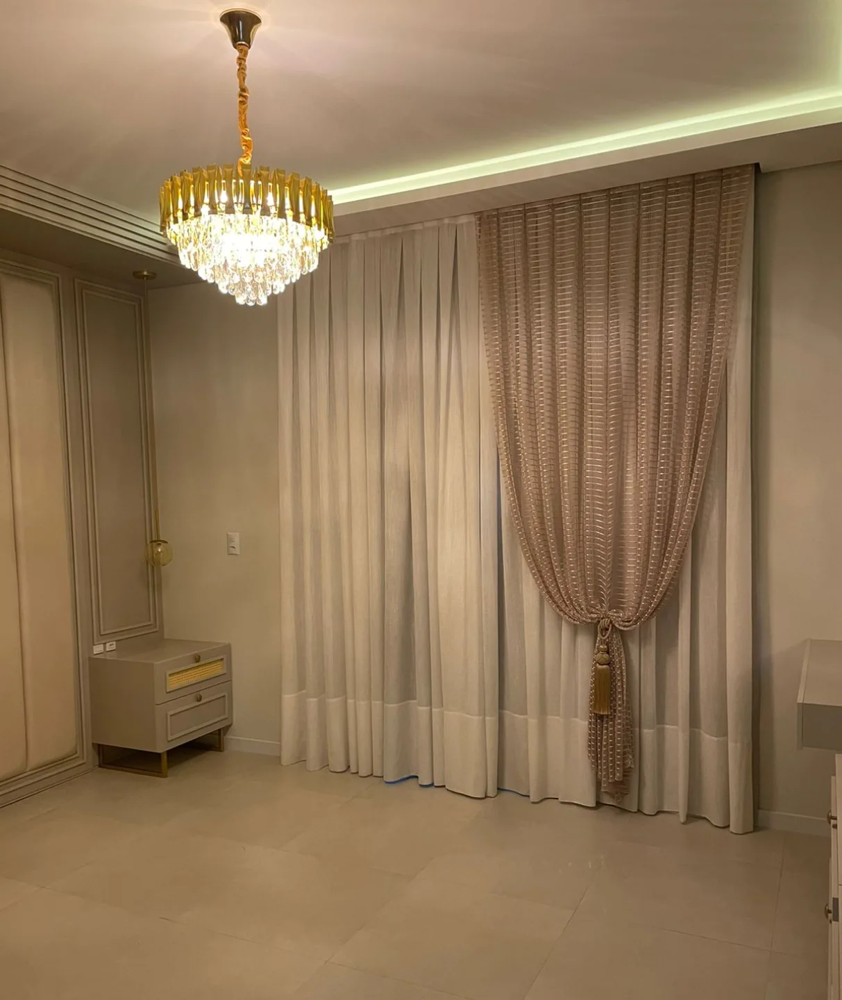
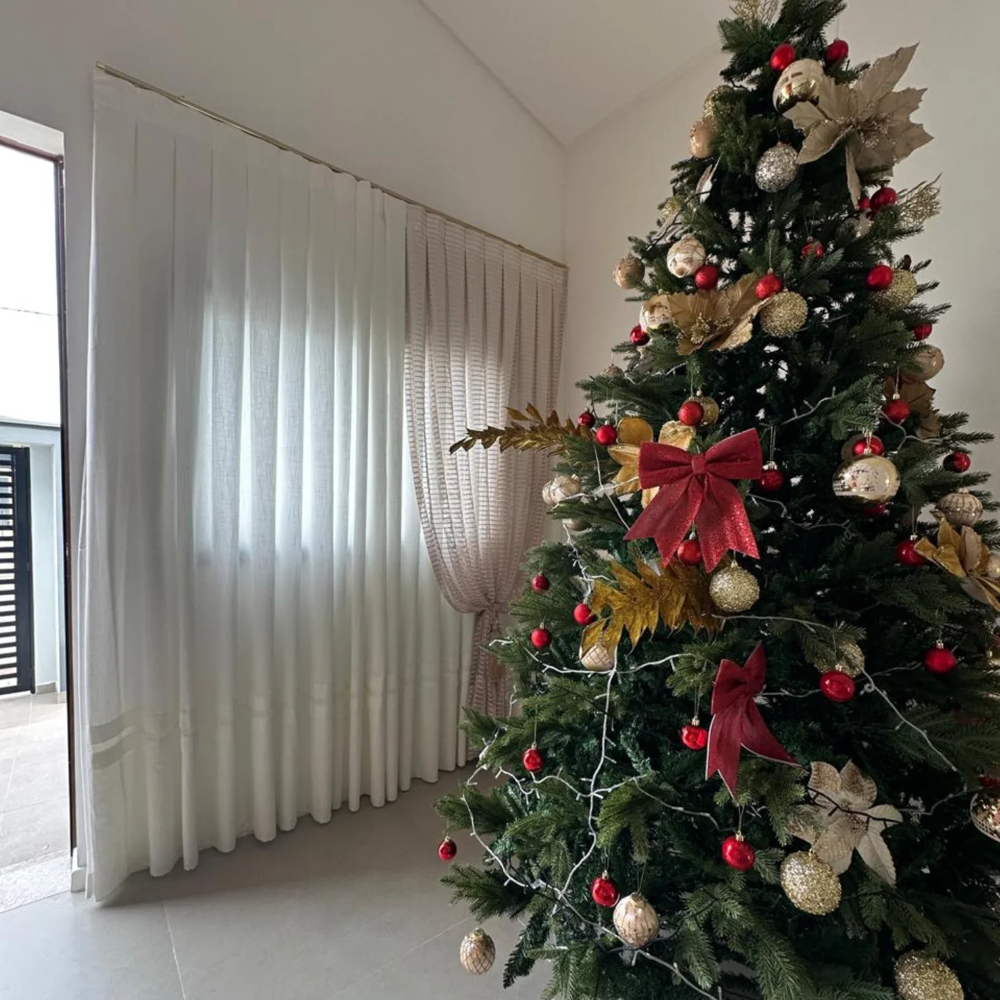
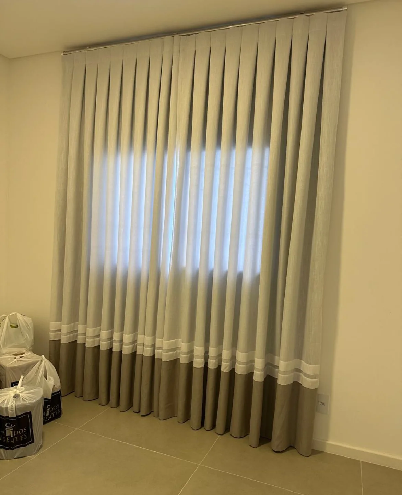
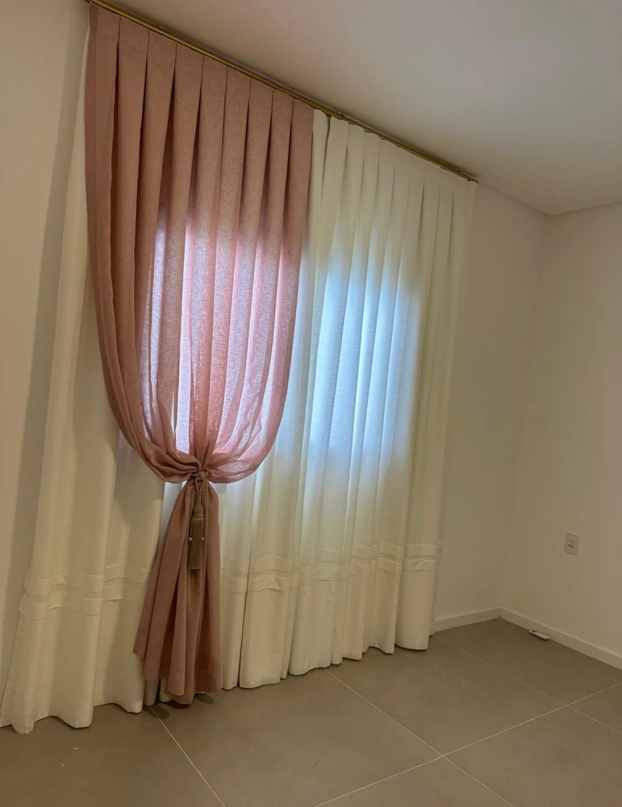
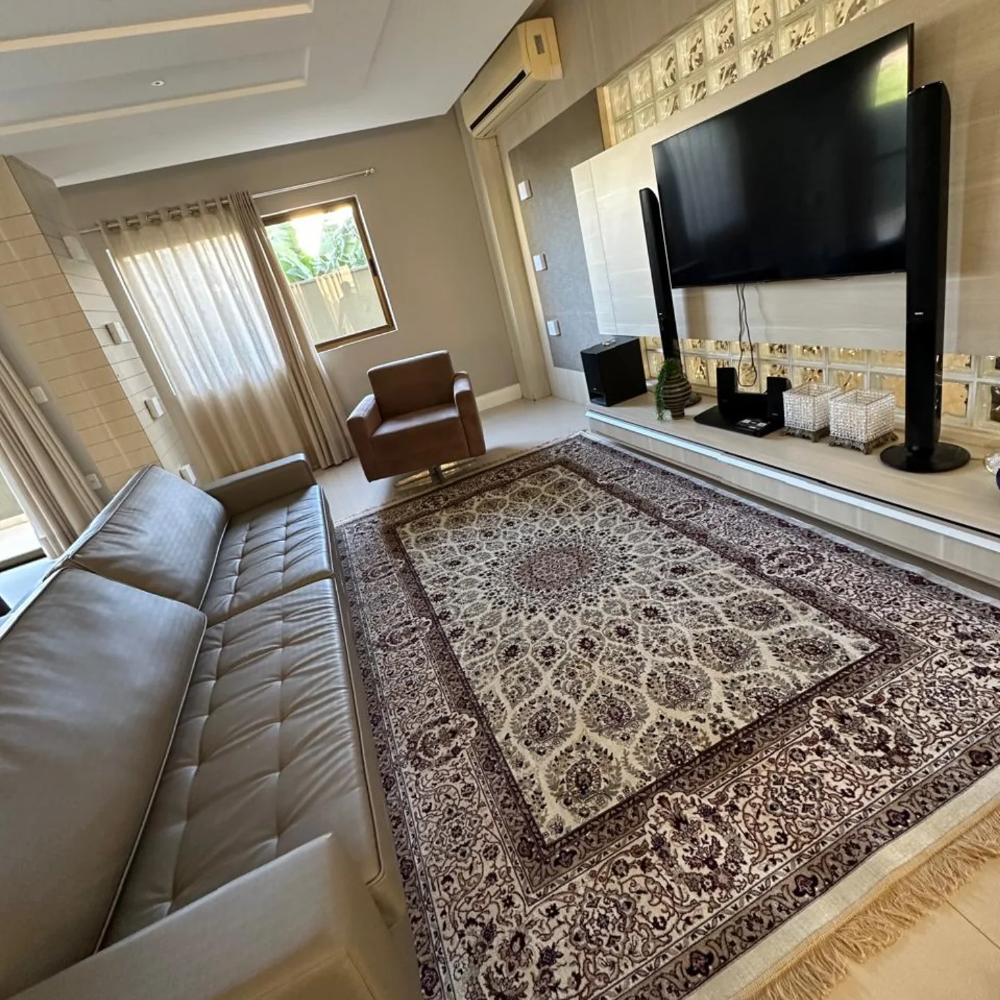
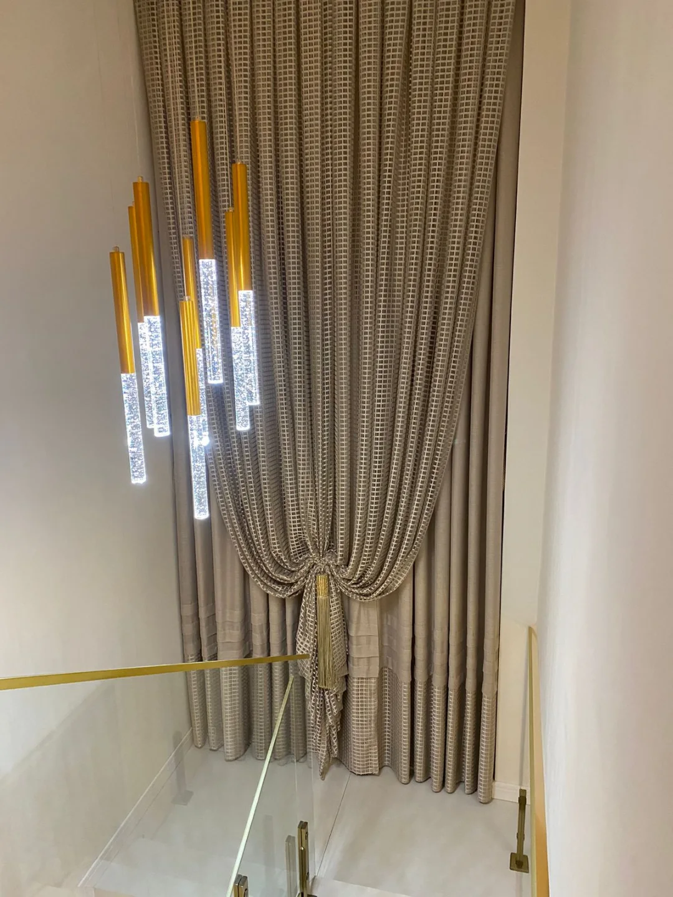

CORTINAS · PERSIANAS · DECORAÇÃO
A luz muda.
A casa também.
Uma escolha bonita começa no espaço onde ela vai viver. Explore referências da Elena e encontre o caminho para transformar sua janela.

DA GALERIA ELENA 01 / 08e proporção no ambiente.
Um olhar para cada ambiente.
INSPIRAÇÕES DA GALERIA
Veja de perto.
Imagine na sua casa.
Ambientes e detalhes publicados pela Elena para dar o primeiro passo. Use as imagens como referência e confirme modelos, tecidos e disponibilidade com a vendedora.






Fotografias de publicações públicas da Elena. São referências visuais; modelos, tecidos e disponibilidade devem ser confirmados com a loja.
ESPAÇO ✳
ESCOLHA NO AMBIENTE
A decisão fica
mais fácil em casa.
A vendedora vai até você, faz a medição e apresenta modelos e tecidos no próprio ambiente. Assim, a escolha começa com as proporções e a luz reais do espaço.
- 01Conte o que procuraUma sala, um quarto ou um ambiente inteiro.
- 02Veja modelos e tecidosA vendedora apresenta possibilidades na sua casa.
- 03Converse sobre a medidaA medição acontece no local, com orientação da equipe.
COMECE PELA SUA IDEIA
O que você quer
transformar?
Escolha um ambiente e uma prioridade. A gente prepara a mensagem para você conversar com uma vendedora.
VAMOS CONVERSAR
Uma janela de cada vez.
Comece pela sua.
Escolha uma vendedora ou veja mais referências no Instagram da Elena.